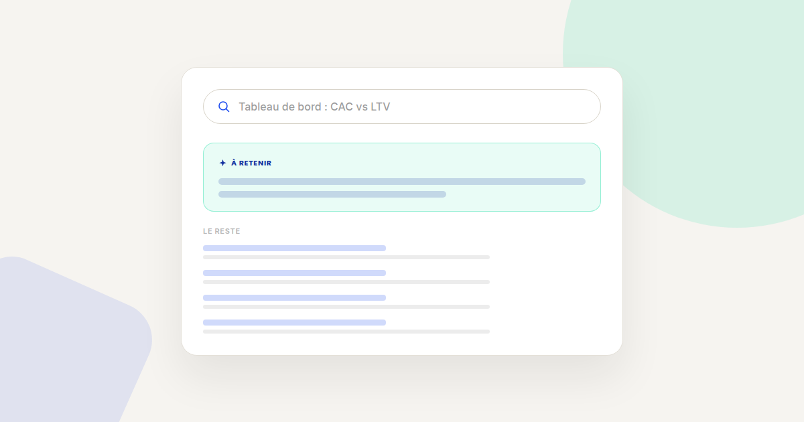
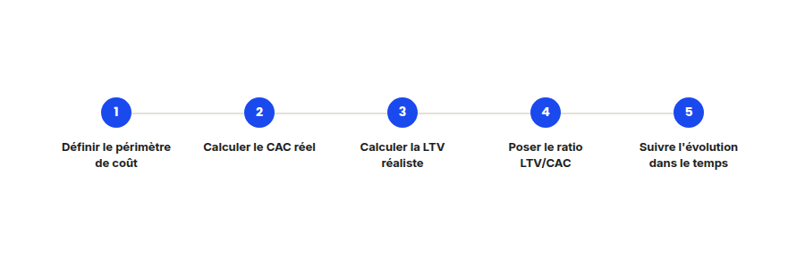

CAC et LTV : la méthode pour savoir si votre acquisition est vraiment rentable
« Notre coût d'acquisition a baissé de 20 % ce trimestre » est une phrase qui ne veut rien dire seule. Sans la mettre en face de la valeur générée par client, c'est un chiffre incomplet qui peut cacher un problème plus grave. Voici comment je pose ce calcul avec mes clients.

Le CAC (coût d'acquisition client) et la LTV (valeur vie client) sont souvent calculés séparément, par des équipes différentes, avec des périmètres différents — ce qui les rend impossibles à comparer honnêtement. Voici la méthode en cinq étapes que j'applique pour les rendre réellement pilotables.
Étape 1 — Définir le périmètre de coût une bonne fois pour toutes
La première source d'erreur : certains ne comptent que le budget média dans le CAC, d'autres y ajoutent les salaires de l'équipe acquisition, les outils, la création de contenu. Aucune des deux approches n'est fausse en soi — mais il faut choisir un périmètre fixe et s'y tenir dans le temps, sinon toute comparaison entre deux périodes devient trompeuse.
Étape 2 — Calculer le CAC réel, canal par canal
Un CAC moyen toutes sources confondues masque des écarts souvent considérables entre canaux. Un CAC organique proche de zéro peut faire illusion sur la rentabilité globale pendant qu'un canal payant particulier brûle le budget sans retour proportionnel. Segmentez toujours le calcul par canal avant de le regarder en moyenne.
Étape 3 — Calculer une LTV réaliste, pas optimiste
- Basez-vous sur la durée de vie moyenne réelle des clients, pas sur celle des meilleurs clients qui tirent la moyenne vers le haut de façon non représentative.
- Intégrez le taux de churn observé, pas un taux cible ou espéré — une LTV calculée sur un churn optimiste donne un ratio flatteur mais faux.
- Séparez la marge brute du chiffre d'affaires : une LTV calculée sur le chiffre d'affaires brut surestime systématiquement la rentabilité réelle d'un client.

Étape 4 — Poser le ratio LTV/CAC, sans le confondre avec le seuil de rentabilité
Un ratio LTV/CAC de 3 pour 1 est souvent cité comme référence dans le SaaS, mais ce n'est pas un seuil universel : un modèle avec un cycle de recouvrement rapide peut être sain avec un ratio plus faible, tandis qu'un modèle qui met des années à rentabiliser un client a besoin d'un ratio bien supérieur pour absorber le risque de trésorerie entre-temps.
Étape 5 — Suivre l'évolution du ratio dans le temps, pas sa valeur ponctuelle
- Une LTV qui monte peut compenser un CAC qui monte aussi — c'est la tendance du ratio, pas la valeur isolée d'un des deux indicateurs, qui indique si l'acquisition reste soutenable.
- Un CAC qui baisse doit être croisé avec la qualité des clients acquis. Un CAC en baisse qui s'accompagne d'une LTV en baisse plus rapide n'est pas une bonne nouvelle : c'est souvent le signe d'un ciblage qui s'est élargi vers des clients moins rentables.
- Recalculez le ratio à fréquence fixe (mensuelle ou trimestrielle selon le volume), avec le même périmètre de coût défini à l'étape 1 — c'est la seule façon de rendre les comparaisons dans le temps réellement fiables.
FAQ
Quel est un bon ratio LTV/CAC ?
Il n'existe pas de seuil universel. Le repère de 3 pour 1 souvent cité dans le SaaS doit être ajusté au cycle de recouvrement de trésorerie et au niveau de risque du modèle économique.
Faut-il inclure les salaires de l'équipe marketing dans le CAC ?
C'est un choix méthodologique légitime dans les deux sens. Le plus important est de fixer le périmètre une fois et de le garder identique dans le temps, pour que les comparaisons restent valides.
Comment calculer une LTV fiable pour une entreprise récente sans historique long ?
Utilisez le churn observé sur les cohortes les plus anciennes disponibles, même limitées, plutôt qu'un taux extrapolé ou un objectif — une LTV prudente vaut mieux qu'une LTV optimiste et fausse.
Envie d'y voir clair sur votre ratio LTV/CAC réel ?
Pour aller plus loin, voir la page Analytics, la page CRO, et la page Attribution multi-touch.
Pour continuer sur ce sujet.